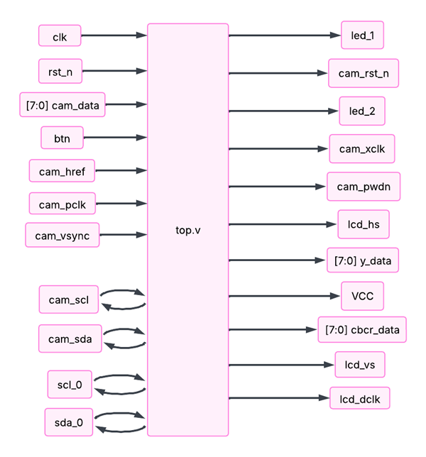
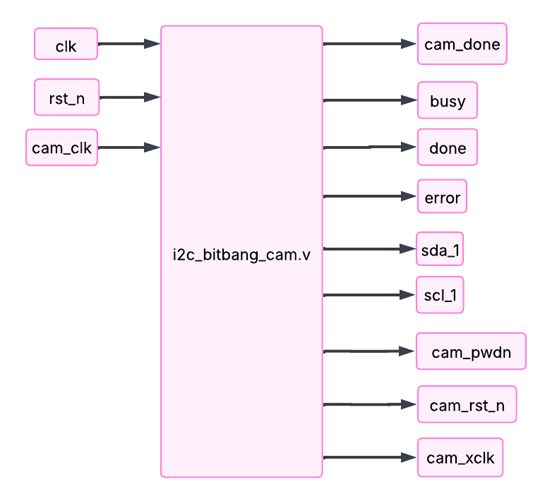
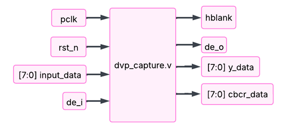
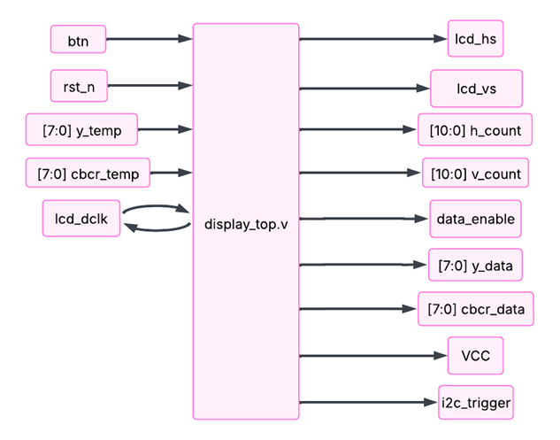
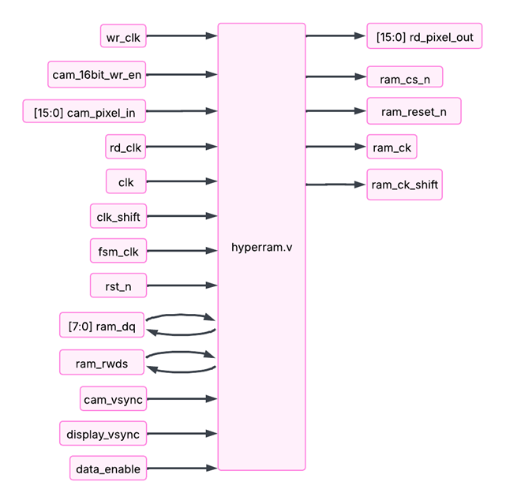
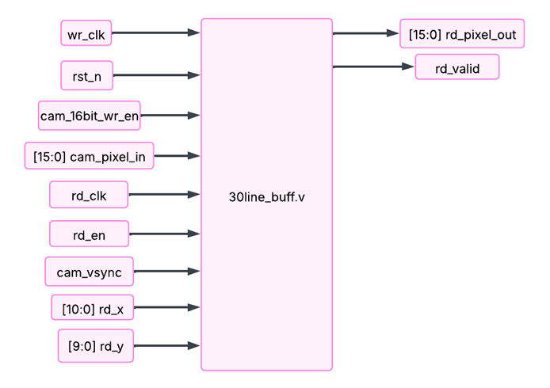

case 01 · Capstone · MTE 481
Vision AI — IR night vision headset
A head-mounted, low-latency IR night-vision system — built with a capstone team and branded Vision AI. My half was the FPGA video pipeline, camera capture through to display output, all in Verilog.

What it does
Vision AI takes an OV5640 CMOS camera under IR illumination, runs the video through an FPGA pipeline, and drives a pair of FLCOS micro-displays — one per eye — at 60 Hz. No host processor in the loop, no full frame buffer, so latency stays in the sub-frame range.

My role
I wrote the FPGA firmware in Verilog and synthesized it in Gowin EDA, targeting a Sipeed Tang Primer 25K. What's in the final build, end-to-end: DVP capture from the OV5640, a bit-banged I²C sequencer that brings up both the camera and the display panels against their register sets, a 30-line buffer on the display path, PLL clock-domain plumbing, and the top-level that wires it all together. My capstone team handled the PCB and the undocumented FLCOS display panels.

What was hard
Three pieces of scope didn't make the final build. A thermal overlay — the thermal sensor wouldn't initialize reliably over I²C. An analog FPV input — the TVP5151 decoder had timing and colorspace issues we couldn't crack in time. And HyperRAM as a full frame buffer — we got it talking, but the data comes back corrupted somewhere in the path, so it sits in the tree but isn't wired into the final pipeline yet.
On the parts that did ship, I rewrote the DVP capture twice and swapped the
I²C controller from a proper FSM to a bit-bang sequencer before the camera
came up cleanly. FPGA debug isn't kind — no printf, no stack
trace, a timing violation just shows up as a glitchy display, so you debug
by staring at a waveform.
Debugging
The software-side debugging notes from the capstone report — kept close to the base text, light edits only.
top.v testing & debugging

top.v block diagram (FPGA top-level: clock, reset, camera DVP inputs, I²C lines, display outputs).
Most of the debugging within top.v was done to determine
which submodule in the software pipeline is failing when an error
occurred. There were instances when after flashing the program into the
Tang Primer 25K and inserting the board onto the PCB, nothing would
happen. In such situations the LEDs were used as debuggers within the
program.
Often asserting the LED in the beginning of top.v resulted
in the corresponding LED turning on during testing. This meant the
software pipeline was failing somewhere along the way. The LED
assertion was moved further along top.v until it could be
determined where the program was failing.
i2c_bitbang_cam.v testing & debugging

i2c_bitbang_cam.v block diagram. Bit-banged I²C/SCCB sequencer that drives the OV5640 startup script and exposes busy, done, and error for the top-level FSM.
The i2c_bitbang_cam.v module was used to initialize the
OV5640 camera using the I²C/SCCB protocol to ensure the camera data can
be received as intended. Initially an alternative approach was taken by
using an i2c_master.v module which was a generalized I²C
function able to handle both reading and writing using the I²C/SCCB
protocol. This function was given the I²C commands as an input,
however, the i2c_bitbang_cam.v module was a simpler module
for our purposes and easier to debug.
Majority of the debugging and testing done on this module was to adjust
the start-up commands. The output signal xclk provided as
input for the OV5640, which is used to determine the pixel clock based
on specific registers outlined by the OV5640 datasheet. After many
hours of testing, the important registers used are summarized below:
| Cmd # | Device addr | Register addr | Data | Description |
|---|---|---|---|---|
| 8 | 0x78 | 0x3037 | 0x14 | PLL divider |
| 210 | 0x78 | 0x3036 | 0x91 | PLL multi |
| 212 | 0x78 | 0x3820 | 0x45 | Video flip |
| 213 | 0x78 | 0x3821 | 0x03 | Video mirror |
| 228 | 0x78 | 0x380c | 0x07 | HTS high bit |
| 229 | 0x78 | 0x380d | 0x68 | HTS low bit |
| 230 | 0x78 | 0x380e | 0x03 | VTS high bit |
| 231 | 0x78 | 0x380f | 0xd8 | VTS low bit |
dvp_capture.v testing & debugging

dvp_capture.v block diagram. Packs the OV5640's 8-bit Y/U/Y/V stream into 16-bit YUV422 words clocked by pclk, with de_o asserted when the output word is valid.
Minimal testing was done for this module over the course of the
project. Initially to ensure this module was intended, the
de_o output signal was tied to one of the LEDs. Thus, if
that LED blinks it means this module is getting valid pixel data from
the camera and the data is being packaged into 16-bit words. This
would also prove i2c_bitbang_cam.v has successfully
configured the OV5640. As soon as the corresponding LED was blinking,
the testing for this module ended.
display_top.v testing & debugging

display_top.v block diagram. Drives the FLCOS displays from the 16-bit YUV422 stream, generating lcd_hs, lcd_vs, data_enable, and the h_count / v_count pixel coordinates.
The display has previously been tested and was operational. The only
additional testing conducted was creating a checkered pattern to test
FIFO and hyperram. This pattern began in display_top.v,
but later moved further up the pipeline. This was later used to
pinpoint the fault in GOWIN FIFO IP, and facilitate the creation of
the 32-line buffer.
Additionally, a PD controller was implemented to time display frames. This was done to sync camera and display frequency, where vsync signals were timing and measured, then used to modify the number of blanking bits used by the display. This allowed the frequency to be constantly adjusted, and removed any strobing previously seen.
Hyperram testing & debugging

hyperram.v block diagram. Bidirectional DDR interface (ram_dq, ram_rwds) to the S70KL1282GA HyperRAM, driven by separate write/read clocks and an FSM clock.
During the testing stages it was determined that the Tang Primer 25K
holds around 23,000 D flip-flops in terms of memory. Thus, image
processing on multiple lines of a singular frame isn't even possible.
Software architecture when dealing with this part of the pipeline had
to be altered multiple times to conform to the limitations of the
Tang Primer 25K FPGA. The initial plan paired a write_ram.v
and read_ram.v wrapper around hyperram.v,
each planned to hold three arrays for buffering and synchronization:
write_ram.v on the camera side and read_ram.v on the display side were intended to wrap a central hyperram.v module — abandoned once the array-passing limitation and Gowin IO primitive constraints forced a rewrite.
The hyperram was made and simulated on iverilog gtkwave. After the
waveforms of the simulated RAM looked correct, the program was ported
over to hyperram.v to try and connect with our Tang Primer
25K.
When running the module, Gowin's synthesis and place-and-route tools
enforce strict rules about which primitives may share an IOLogic cell.
Two error codes appeared repeatedly throughout development.
CK0021 fires when an IDDR or
DFFCE primitive connects to the internal
_d net of an inout port. Gowin creates a
hidden _d net for every inout port, and any
registered logic reading this net alongside an ODDR
triggers the error. CK0011 fires when an
ODDR primitive does not drive a pad directly, meaning its
output must reach a physical pin without any intervening logic or
intermediate wires. The DQ bus required DDR output to drive Command
Address (CA) bytes and write data on both clock edges, and DDR input
to capture read data returned by the RAM and strobed by the
RWDS signal.
A wrapper module was introduced to isolate the IO primitives from the register logic, hoping that hierarchy would prevent the checker from seeing the conflict, but GOWIN flattens the hierarchy, so the wrapper did not provide any isolation. Then the module was written from scratch with only the default register primitives and that solved the compile issues.
Next, the clock signals were analyzed because if the clock is wrong, nothing else will work. Probes were used to check the clock lines, making sure the timing, duty cycle, and voltage levels were all within spec. At first, it was noted that the Tang Primer 25K could not supply 3.3 V with 300 MHz so the clock was slowed down to 100 MHz which still allowed plenty of slack for the capture to reach the display. The signals looked clean with minimal noise, no strange distortions, and no obvious jitter.
The board didn't have any simple contact points to access the RAM signals. There were no test points, so there was no way to easily connect more tools like logic analyzers. This lack of clarity made debugging much more complex. There are still a few possible reasons why it failed like the configuration registers might not have been set exactly right, bad latency, or drive strength. There could also be a small hardware issue, like a bad solder joint or signal problem. Or maybe there was a small mistake in how the protocol was handled. In the end, it's one of those situations where everything looks right on its own, but the whole system doesn't work as intended.
32line_buff testing & debugging

30line_buff.v in this earlier revision; the final build used a 32-line variant of the same architecture). Independent write- and read-clocks bridge the camera and display domains, with rd_x / rd_y selecting the pixel read out.
There were many iterations of the 32line_buff. Initially,
a GOWIN FIFO with a 200-pixel buffer was used but was not enough for
synchronizing the clocks. As the camera would write faster than the
display could read, the FIFO would fill and not overwrite existing
pixels, causing data corruption. Thus, with a 32-line buffer, the
display can read past enough for the buffer to clear previous data
before writing in new camera pixels. This creates no distortions and
serves as the bridge between camera and display.
Additionally, the GOWIN FIFO IP is suspected to be entirely broken, stemming from an IP software issue. The 32-line buffer can be implanted directly on LUTs, or in BSRAM with no difference.
Camera clock testing
With the system operational, the camera speed was a major concern as
a large frequency mismatch was observed between display and camera.
Thereby, the clock pin on the camera 24-pin header was probed. There
are 2 clock pins: the LCD_DCLK and LCD_PCLK.
The DCLK is sent from the FPGA at 25 MHz, while PCLK is generated by
the OV5640. DCLK was measured to work properly, with the signal
having distinct rising and falling cycles. However, the PCLK was
found to be running at much higher speed, roughly 115 MHz when trying
to match camera-display timing. The resulting waveform was a sharp
saw-tooth pattern, with peaks at 2.7 V and drops of roughly 1.4 V.
This is not ideal, as clock rising edges may be misinterpreted.
Upon further testing, the FPGA was able to properly interpret the clock input. The source of this saw-tooth pattern is likely caused by no impedance matching being present. The PCB trace itself is less than 1 cm, requiring no trace-length matching, but should have included 33–77 Ω resistors to terminate reflections created by the high impedance FPGA pin. In future designs, this should be considered and implemented.
- Platform
- Sipeed Tang Primer 25K (Gowin GW5A FPGA)
- Toolchain
- Gowin EDA
- HDL
- Verilog
- Camera
- OV5640 over DVP, I²C-configured
- Display
- 2× FLCOS micro-displays @ 60 Hz, I²C-configured
- Buffering
- 30-line on-chip buffer (HyperRAM WIP)